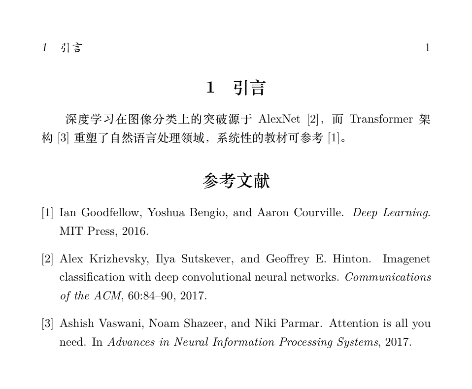
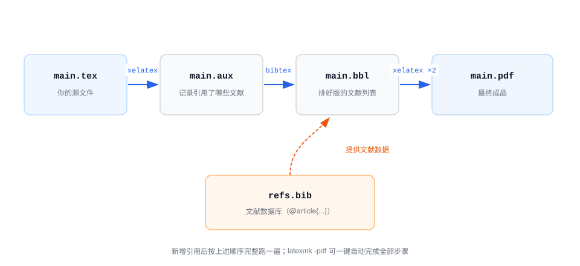

が表示され、文末に引用順に並んだ文献リストが自動生成される——フォーマットを一行も書いていない。
長文書の二大自動化ツール：相互参照（章・節、図表、数式の相互参照）と参考文献管理（BibTeX）。
共通する哲学：番号は常に自動で、あなたは「ラベル名」を付けるだけ。
ラベルと参照：\label と \ref
相互参照の3ステップ：参照される場所で \label{ラベル} を付け、参照する場所で \ref{ラベル}（または \pageref、\eqref）で番号を取得。
| コマンド | 出力内容 | 典型的な使い方 |
|---|---|---|
| \label{key} | 出力なし。直前のオブジェクトにラベルを付ける | \section、\caption、equation の直後 |
| \ref{key} | 番号（例：3、1.2） | 第~\ref{sec:method} 節 |
| \eqref{key} | 括弧付き番号（例：(1)） | 式~\eqref{eq:loss}（数式専用） |
| \pageref{key} | ページ番号 | 第~\pageref{sec:method} ページ参照 |
\label は参照されるコマンドの直後、同じ環境の階層に書く必要がある——「\section{方法}\label{sec:m}」が正しい書き方で、\label を次の段落に書くと、参照先が誤ったオブジェクトになる。数式の \label は equation 環境の内部に書くこと。
実例：章・節、数式、画像の相互参照
\usepackage{amsmath, graphicx}
\begin{document}
\section{方法}\label{sec:method}
本節ではモデル構造を説明する。損失関数は式~を参照。\eqref{eq:loss}，
実験分析は第~を参照。\ref{sec:result}節。
\begin{equation}\label{eq:loss}
L = \sum_{i=1}^{n} \left( y_i - \hat{y}_i \right)^2
\end{equation}
\section{実験結果}\label{sec:result}
方法（第~\ref{sec:method}節）の損失は式~で\eqref{eq:loss}評価され、
曲線の形状は図~を参照。\ref{fig:sin}。
\begin{figure}[htbp]
\centering
\includegraphics[width=0.5\textwidth]{sin}
\caption{正弦曲線}
\label{fig:sin}
\end{figure}
\end{document}
すべての参照が自動で正しい番号を取得できる。以後、新しい章や数式をどれだけ挿入しても、番号と参照は自動的に更新される——これは Word で「手動で番号を直して発狂する」問題の最終的な解決策である。
ラベル名は「プレフィックス:内容」を推奨。よく使うプレフィックスの規約は以下の通り。
| プレフィックス | 対象 | 例 |
|---|---|---|
| sec: | 章・節 | \label{sec:method} |
| fig: | 图 | \label{fig:sin} |
| tab: | 表 | \label{tab:result} |
| eq: | 数式 | \label{eq:loss} |
| chap: | 章（report/book） | \label{chap:intro} |
ハイパーリンク：hyperref マクロパッケージ
hyperref を読み込むと、すべての \ref、\cite、\url が自動的にクリック可能なリンクになり、PDF にサイドバーのブックマークが生成される。
実例：hyperref のよく使う設定
citecolor=blue, urlcolor=blue]{hyperref}
% colorlinks=true は色でリンクをマークする（デフォルトの赤枠は見苦しい）
% 3つのパラメータがそれぞれ制御：内部参照 / 文献引用 / URL の色
\url{https://www.example.com} % URL の組版：自動改行、クリック可能
hyperref はほぼ常にプリアンブルで最後に読み込むマクロパッケージであるべき——他のすべてのマクロパッケージが揃ってからでないと文書を正しく変換できず、早く入れると原因不明の衝突が起きる。
参考文献：BibTeX ワークフロー
参考文献の正しいやり方は文末に手書きでリストを書くことではなく、文献情報を .bib データベースに保存し、本文で \cite を使って引用し、BibTeX プログラムが自動的に整形された文献リストを生成する。
まず文献データベースがどのようなものか見てみよう——各文献は「エントリ」である。
実例：refs.bib 文献データベース
author = {Krizhevsky, Alex and Sutskever, Ilya and Hinton, Geoffrey E.},
title = {ImageNet Classification with Deep Convolutional Neural Networks},
journal = {Communications of the ACM},
year = {2017},
volume = {60},
pages = {84--90}
}
@book{goodfellow2016, % エントリタイプ：書籍
author = {Goodfellow, Ian and Bengio, Yoshua and Courville, Aaron},
title = {Deep Learning},
publisher = {MIT Press},
year = {2016}
}
波括弧の中の最初の項目は引用キー（例：alexnet2012）、本文の \cite{alexnet2012} はこれによってこの文献を見つける。キー名は任意だが、文書全体で一意であること。
| エントリタイプ | 対応する文献 | 主要フィールド |
|---|---|---|
| @article | ジャーナル論文 | author、title、journal、year |
| @inproceedings | 会議論文 | author、title、booktitle、year |
| @book | 書籍 | author/editor、title、publisher、year |
| @phdthesis | 博士論文 | author、title、school、year |
| @misc / @online | Webページ、レポートなど | title、url、note、year |
本文側には2つのコマンドだけ。文書の末尾に置く：
実例：引用と文献リストの生成
\begin{document}
深層学習のブレイクスルーは AlexNet~ に始まる\cite{alexnet2012}，
体系的な教科書は~を参照。\cite{goodfellow2016}。
\bibliographystyle{plain} % 文献スタイル：plain 数字連番スタイル
\bibliography{refs} % 文献データベースファイル（.bib 拡張子なし）
\end{document}

引用箇所に自動的に
なぜ4回コンパイルするのか
BibTeX を追加すると、完全なコンパイルは4ステップになり、ファイル間にパイプラインが形成される。

| ステップ | コマンド | 役割 |
|---|---|---|
| 1 | xelatex main | main.aux を生成し、本文がどのキーを引用したかを記録する |
| 2 | bibtex main | .aux と refs.bib を読み、main.bbl 文献リストを生成する |
| 3 | xelatex main | .bbl の内容を文書に組み込む |
| 4 | xelatex main | 引用番号が安定し、正しく表示される |
引用が [?] と表示される原因はこのパイプラインにある：bibtex を実行していない、または実行後にさらに2回コンパイルしていない。Overleaf は全ステップを自動で実行してくれる。ローカルでは latexmk -pdf main.tex で一発実行するのがおすすめ。
BibLaTeX：より現代的な選択肢
BibTeX は1985年の老舗。後継の biblatex（プログラム biber と組み合わせる）は中国語のシーンでより知る価値がある。
| 観点 | BibTeX | biblatex + biber |
|---|---|---|
| 誕生時期 | 1985 | 2009年から |
| Unicode / 中国語 | 対応は限定的 | ネイティブ UTF-8 |
| スタイルのカスタマイズ | .bst ファイルを書く必要があり、ハードルが高い | LaTeX 構文で、直感的 |
| 中国語の国家標準 | 設定が必要で、やや煩雑 | biblatex-gb7714-2015 マクロパッケージが直接対応 |
| 適用の推奨 | 古いテンプレートやジャーナルで指定された場合に使用 | 新規プロジェクト、中国語論文では優先 |
実例：biblatex の基本用法
\addbibresource{refs.bib} % .bib 拡張子を付けることに注意
\begin{document}
深層学習のブレイクスルーは AlexNet~ に始まる\cite{alexnet2012}。
\printbibliography[title=参考文献] % 文書末尾に文献リストを出力
\end{document}
コマンドを bibtex から biber に変えるだけで、他のコンパイルパイプラインは完全に同じ。中国語の卒業論文を書くときは、biblatex-gb7714-2015 マクロパッケージをインストールし、style を gb7714-2015 に変更すれば、国家標準の記載形式を満たせる。
まとめ
| ニーズ | コマンド |
|---|---|
| ラベルを付ける | \label{プレフィックス:名前}（参照されるオブジェクトの直後） |
| 番号 / ページ番号 / 数式の参照 | \ref、\pageref、\eqref |
| ハイパーリンク | hyperref（最後に読み込む） |
| 文献の引用 | \cite{キー名}、文献は .bib データベースに保存 |
| 文献リストの生成 | BibTeX：\bibliography；biblatex：\printbibliography |
| ワンクリックコンパイル | latexmk -pdf main.tex |